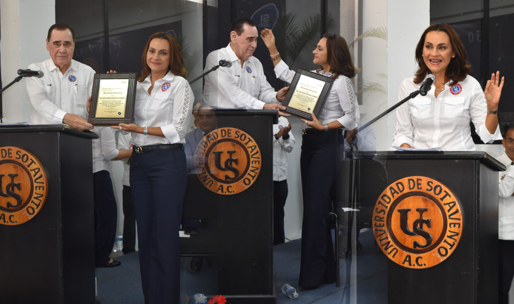

Dra Rosa Rodríguez Caamaño como nueva Rectora
Coatzacoalcos, Ver. – El rector de la Universidad de Sotavento, Juan Manuel Rodríguez García, anunció hoy como su sucesora a la Dra. Rosa Aurora Rodríguez Caamaño,
al iniciar la celebración del 30 aniversario de fundación de la institución.

Inicia celebración de los 30 años de fundación de la US, con placa conmemorativa, cápsula del tiempo, medallas a fundadores, exposición pictórica y conferencia magistral
Rodríguez García expresó que la directora de Posgrados e Investigación, Rodríguez Caamaño, asumirá oficialmente este cargo en los próximos días. La nueva Rectora tiene 25 años colaborando en la dirección de la US, y es Licenciada en Contaduría por el Tecnológico de Monterrey, Máster en Administración de Empresas por la UNAM y Doctora en Administración y Gestión Empresarial por la Universidad Istmo Americana.